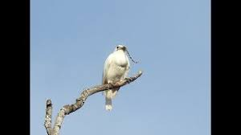
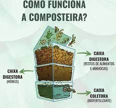

Sobre eu
Meu nome é Felipe, tenho 16 anos, nasci na cidade de São Paulo, sou brasileiro, estudo no colégio módulo desde o 3º ano do fundamental I. Gosto de ler a Bíblia e ver coisas sobre ela, também gosto de pesquisar sobre saúde, ver animais e plantas e às vezes também gosto de alguns assuntos das matérias escolares. Para saber sobre as coisas que eu gosto, clique nos botões encima da foto de mim mesmo.
Ler a Bíblia
Acho interessante e importante ler a Bíblia, nela é contada parte da história do mundo. Eu confio na Bíblia, eu acredito que ela fala somente a verdade. Ela contém informações muito importantes para nossa vida, como de nos ensinar a sermos pessoas melhores, nos mostra o que vai acontecer no futuro pelas profecias
Pesquisar sobre saúde
Eu acho muito interessante e legal pesquisar sobre saúde, é um assunto que eu gosto e é muito importante, desse modo eu pesquisou uma coisa que eu gosto e ainda me divirto. Pesquisando sobre saúde, eu mudei hábitos meus que não eram bons e eu já estou podendo ver diferenças na minha vida, por exemplo estou conseguindo acordar menos cansado e dormir melhor.
Também comecei a fazer exercícios, eles são bons para melhorar a saúde, sentir sono na hora certa e ganhar mais força.
Animais e plantas
Eu gosto da natureza, acho ela uma bela criação de Deus, gosto de passsar parte do meu tempo vendo coisas sobre a natureza, me faz esquecer de coisas ruins e acho relaxante. Tem um pássaro, que um dos nomes dele é Uirapuru.

Ele tem um canto bem bonito, recomendo ver esses vídeos do Youtube: https://www.youtube.com/watch?v=XsgXA_SQ7ws e esse: https://www.youtube.com/watch?v=i0ZJu6XWwdQ
Há outra ave e que possui um canto bem diferente, seu nome é Araponga-da-Amazônia.

Aqui está também um link para um vídeo com o canto dessa ave. CUIDADO, recomendo abaixar o aúdio para esse vídeo: https://www.youtube.com/watch?v=uWopM3QMU-4.
Também me interesso pelas abelhas e marimbondos, especialmente as abelhas sem ferrão, e o melhor é que essas abelhas são nativas do Brasil, eu já vi mais de dois tipos diferentes dessas abelhas. Uma que eu consegui identificar é a abelha Jatai. Talves um dia eu tente criar uma colmeia dessas abelha em casa. Abaixo está uma foto da abelha Jatai.

Acho as plantas seres vivos muito divertidos e bonitos, eu gosto de ver o desenvolvimento delas, também gosto do aroma de certas plantas, elas também deixam o ambiente mais bonito, vivo. Por um tempo eu tive mais de um pé de manjericão e eles estavam com flores, várias abelhas iam nas flores deles, elas também tinham um cheiro bom, uma vez eu vi até um passarinho indo sugar acho que o néctar do manjericão. Eu tenho um pé de babosa que tem mais de 1 ano, ela está bem grande.

Alguns dias atrás, saiu a primeira flor do meu cacto Mandacaru, sua flor dura apenas uma noite e ela abre durante a noite. Se polinzada, ela pode gerar um fruto vermelho, que atrai pássaros.


Às vezes também gosto do que é passado no colégio
Há certos assuntos, como Geografia
Ecologia
Também acho interessante e importante ser ecologico, eu gosto da sustentabilidade, assim a natureza não é degrada. É possível conseguir adubos grátis tendo composteiras em casa, com elas o lixo orgânico é aproveitado e transformado em adubo e ainda menos lixo é depositado nos aterros sanitários. Atualmente eu não tenho uma composteira, mas no futuro eu gostaria de tentar ter uma. Mas acho que começaria por um minhocário.

Espero que você tenha gostado do meu site. Tchau